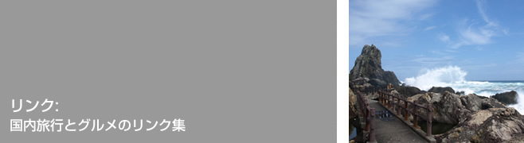

東京ぐるめ
うんまいもの大好きの「かっきー」が、食を通して出合った人＆モノを、ゆる～く紹介しています。
JTB国内旅行
宿泊施設やツアー、航空券の検索・予約から、観光情報やイベント情報など、旅のことならなんでも情報をゲットできます。とりあえずの旅程を考えるのにとっても便利！
oleaclicca（オレアクリッカ）
オリーブオイル（その他美味しいイタリア食材）のインポーターさんのサイト。こちらのオイルたちはみんな個性的でおしゃべりです。めっちゃめちゃおいしいんだからあ。
お問合わせはこちらまで